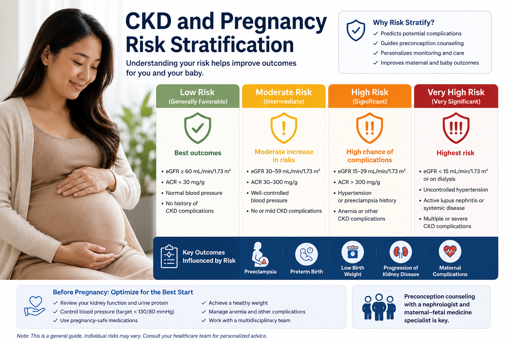
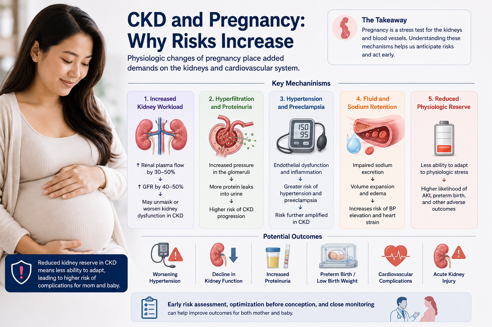
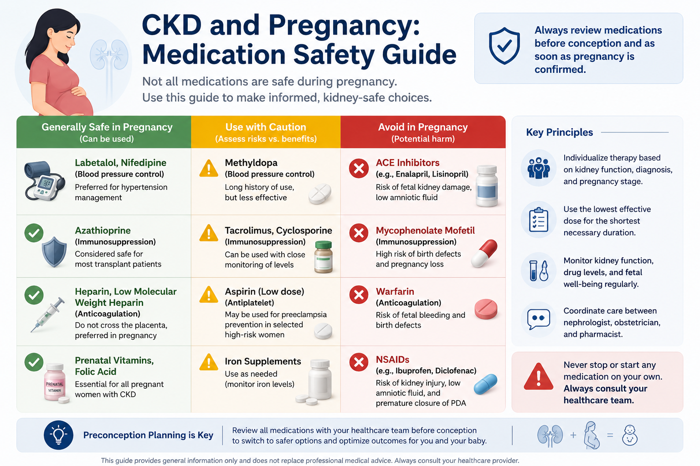
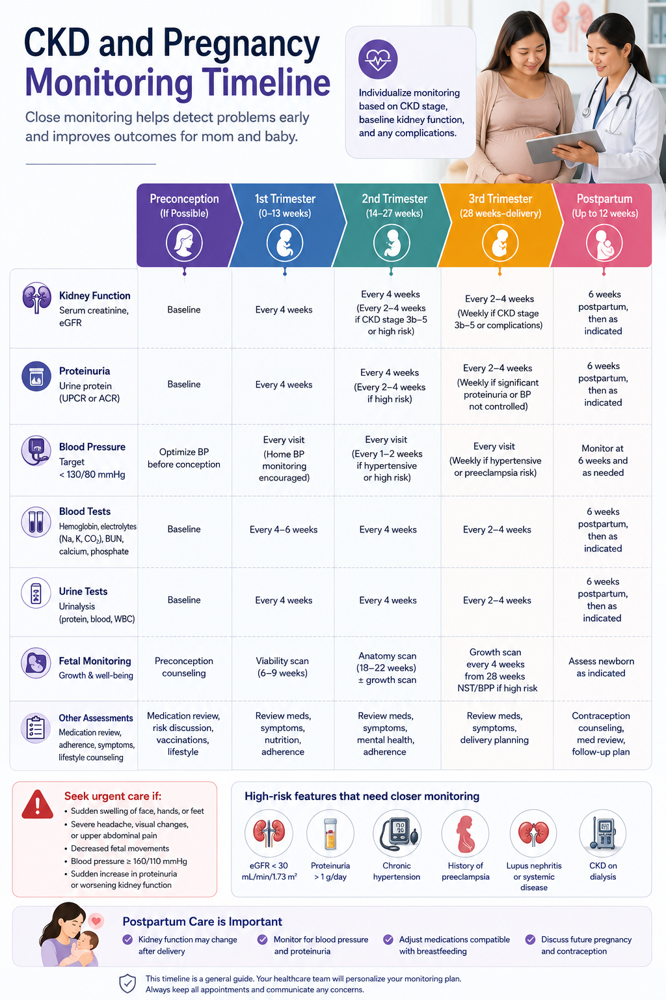
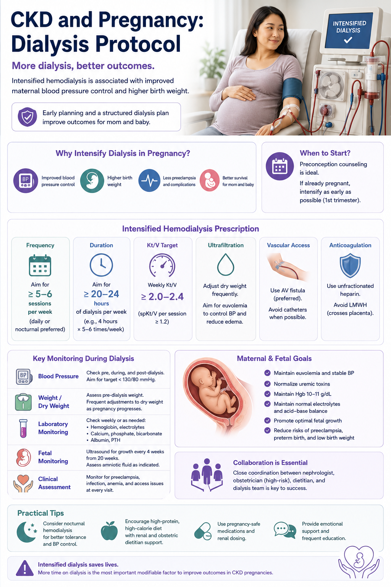
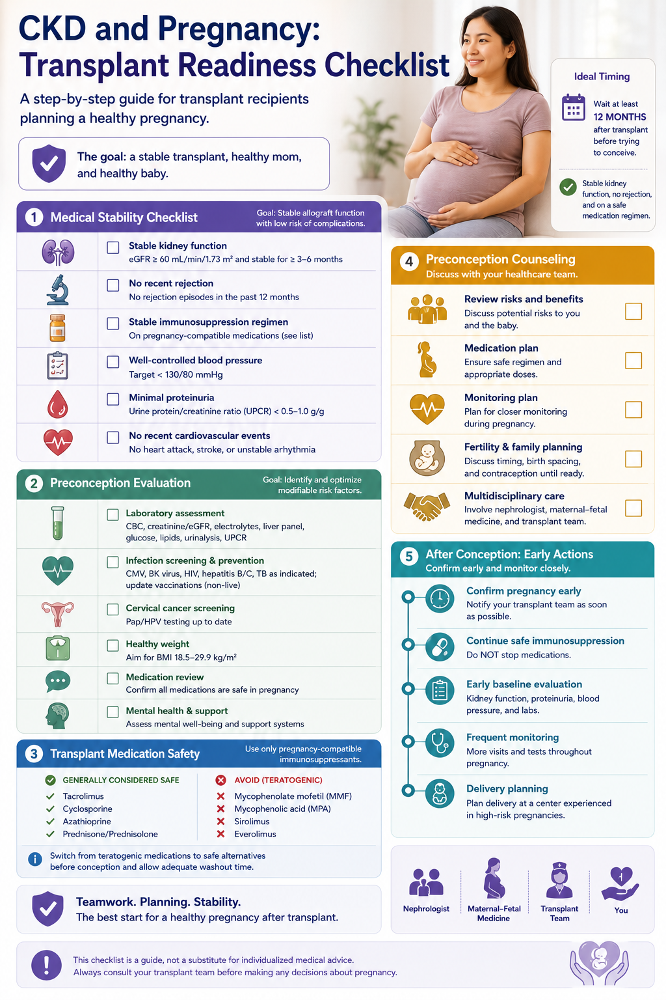
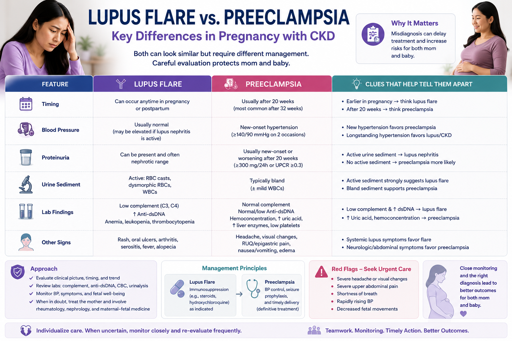
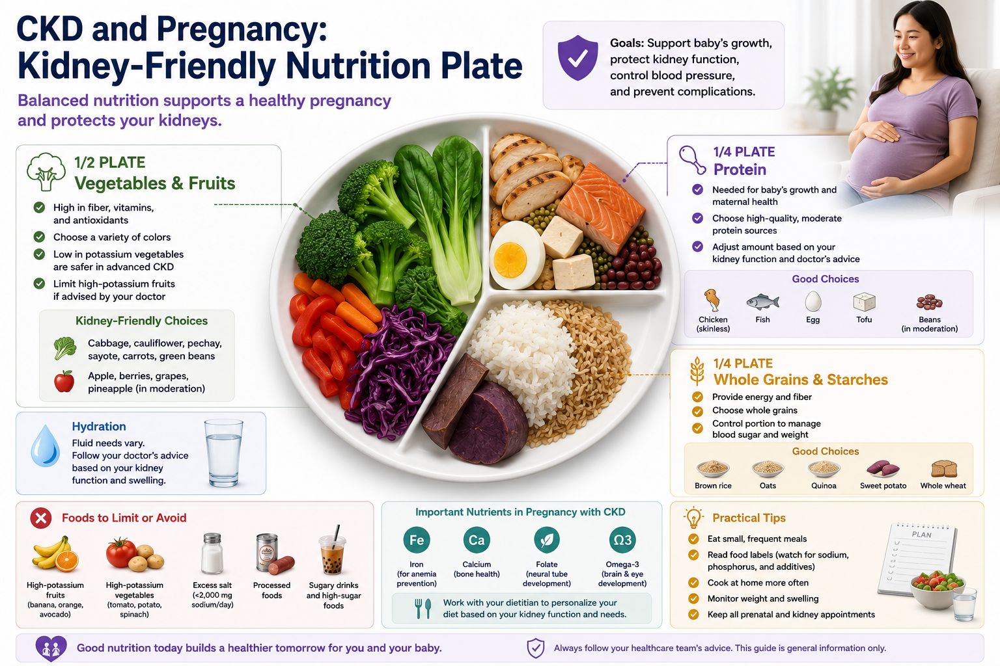
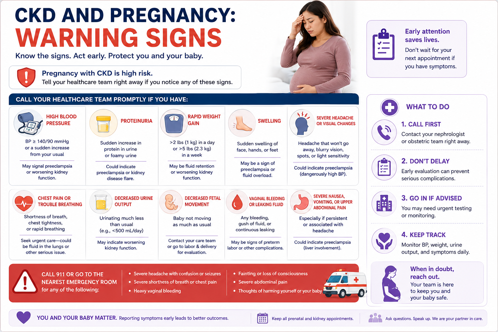
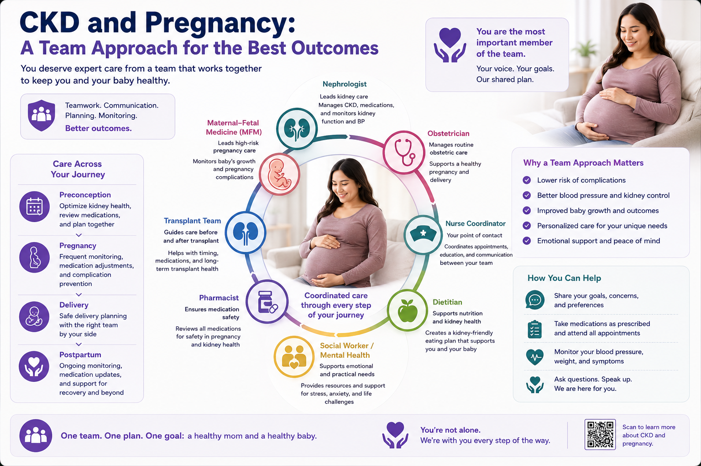

This guide is for women with chronic kidney disease (CKD) who want to understand how their condition interacts with pregnancy. Pregnancy with CKD is possible — and with the right care team, many women achieve successful outcomes. However, the stakes are higher than in a healthy pregnancy. The earlier you prepare, the better your chances. This guide covers risk stratification, medication safety, monitoring, special situations (dialysis, transplant, lupus), warning signs, and postpartum care.
Understanding CKD and Pregnancy
What Is CKD?
Chronic kidney disease (CKD) means the kidneys have permanently and progressively lost some of their ability to filter the blood. CKD is staged 1–5 by eGFR. A normal eGFR is above 90 mL/min/1.73m².
How Common Is CKD in Pregnancy?
CKD affects approximately 3 in every 100 pregnancies worldwide — including women with diabetic nephropathy, lupus nephritis, IgA nephropathy, FSGS, hypertensive nephrosclerosis, PKD, and prior kidney transplant.
The Bidirectional Relationship
CKD and pregnancy affect each other in both directions. CKD increases risks of preeclampsia, premature birth, fetal growth restriction, and cesarean delivery. And pregnancy can accelerate CKD progression — sometimes permanently pushing a woman closer to dialysis.
How Kidneys Normally Adapt to Pregnancy
In a healthy pregnancy, the kidneys raise their filtration rate (eGFR) by 40–60% above baseline. In CKD, this reserve capacity is blunted or absent — the kidneys cannot meet the increased demand, which is why complications arise.
Risk Stratification by CKD Stage
| CKD Stage | eGFR Range | Maternal Risk | Risk of CKD Progression | Fetal / Neonatal Risk |
|---|---|---|---|---|
| Stage 1–2 | >60 mL/min/1.73m² | LOW–MODERATE | ~5% long-term acceleration if BP controlled and minimal proteinuria | Near-normal with close monitoring |
| Stage 3a | 45–59 mL/min/1.73m² | MODERATE | 10–15% risk of ≥25% eGFR decline; higher if proteinuria present | Increased preterm birth and IUGR risk |
| Stage 3b | 30–44 mL/min/1.73m² | HIGH | 30–50% risk of accelerated progression; some require dialysis within 1–2 years postpartum | Significant IUGR, preterm birth, fetal distress risk |
| Stage 4 | 15–29 mL/min/1.73m² | VERY HIGH | Up to 50–70% risk; dialysis within 12 months postpartum not uncommon | High rates of preterm delivery (<34 weeks), IUGR, NICU admission |
| Stage 5 / Dialysis | <15 mL/min/1.73m² | EXTREME | Irreversible ESKD already present; intensive HD management required | High fetal loss without intensive HD; improved to ~85% survival with daily dialysis |

⚠ Highest-Risk Features — Counsel Extensively Before Conception
- eGFR below 45 mL/min/1.73m² (CKD Stage 3b or higher)
- Proteinuria >1 gram per day before pregnancy
- Uncontrolled hypertension requiring multiple agents
- Active lupus nephritis within the past 6 months
- Diabetic nephropathy with heavy proteinuria
- Kidney transplant with eGFR <45, recent rejection, or MMF still on board
- Bilateral renal artery stenosis or solitary kidney with CKD 3b+
- Hereditary nephropathy with rapid progression pattern
Pathophysiologic Mechanisms: Why CKD Complicates Pregnancy
Blunted Renal Reserve
Normal pregnancy demands a 40–60% rise in eGFR. CKD kidneys are already filtering at reduced capacity. When demand exceeds capacity, BUN and creatinine rise and the placenta receives less perfusion — setting the stage for fetal growth restriction.
Endothelial Dysfunction
CKD generates uremic toxins, oxidative stress, and chronic inflammation that impair vascular endothelial function — dramatically raising the risk of preeclampsia and placental insufficiency.
Proteinuria Amplification
Hyperfiltration and altered glomerular permeability in pregnancy increase urinary protein loss. In CKD glomerulopathies (IgA, FSGS, lupus), this can precipitate nephrotic-range proteinuria that mimics or masks preeclampsia.
Chronic Anemia
Erythropoietin deficiency in CKD creates baseline anemia. Pregnancy's expanded blood volume dilutes hemoglobin further, reducing oxygen delivery to the placenta and contributing to fetal growth restriction.
RAAS Dysregulation
Pregnancy normally activates the RAAS to support blood volume expansion. In CKD with pre-existing RAAS dysregulation, this activation is dysregulated — contributing to hypertension that is harder to control.
Mineral and Bone Imbalance
CKD impairs phosphate excretion and vitamin D activation. Fetal skeletal development requires large calcium and vitamin D transfers from the mother, creating competing demands that must be actively managed.

Medications: Safety, Changes, and Special Considerations
Some medications that protect the kidneys outside of pregnancy are harmful — or even fatal — to the developing fetus. Planning medication changes before conception is essential, not as an afterthought once a positive test appears.

| Medication | Status in Pregnancy | Mechanism of Harm / Benefit | What to Do |
|---|---|---|---|
| ACE Inhibitors enalapril, lisinopril, perindopril, ramipril |
CONTRAINDICATED | Block fetal RAAS development → oligohydramnios, fetal renal tubular dysgenesis, skull hypoplasia, anuria. Risk highest 2nd–3rd trimester; 1st trimester exposure also associated with cardiovascular defects. | Stop BEFORE conception. Switch to labetalol, nifedipine, or methyldopa. Do not wait for positive test. |
| ARBs losartan, irbesartan, telmisartan, valsartan, olmesartan |
CONTRAINDICATED | Same mechanism as ACEi — RAAS blockade causes fetal renal failure and oligohydramnios. All ARBs carry the same risk. | Stop BEFORE conception. Never substitute one ARB for another — all are fetotoxic. |
| Mycophenolate Mofetil (MMF) CellCept, mycophenolic acid |
CONTRAINDICATED — TERATOGEN | Inhibits de novo purine synthesis → fetal organogenesis failure. Associated with ear malformations (microtia), cleft lip/palate, distal limb anomalies, and early miscarriage. | Switch to azathioprine at least 6 weeks before conception. Not on the day of a positive test — too late. Discuss with transplant team early. |
| Tacrolimus Prograf — transplant immunosuppression |
GENERALLY CONTINUE | Limited teratogenicity at therapeutic doses. Pregnancy dramatically increases tacrolimus metabolism — trough levels can drop by 30–50%, risking rejection. Monitor trough levels every 2–4 weeks. | Continue; do not reduce dose without nephrology guidance. Target trough levels same as pre-pregnancy or per transplant protocol. |
| Cyclosporine Neoral — transplant/glomerulonephritis |
GENERALLY CONTINUE | Associated with hypertension and IUGR but acceptable risk-benefit ratio in organ recipients. Absorption is unpredictable in pregnancy. | Continue; monitor trough levels and blood pressure closely. Counsel patient on IUGR risk. |
| Azathioprine | ACCEPTABLE — PREFERRED SUBSTITUTE | Long track record in lupus and transplant pregnancies. Fetal liver lacks enzyme to convert active metabolite — explains relative fetal safety. | Preferred alternative to MMF in pregnancy. Dose: typically 1–2 mg/kg/day. Monitor CBC for myelosuppression. |
| Hydroxychloroquine Plaquenil — lupus nephritis |
CONTINUE THROUGHOUT | Reduces lupus flare frequency. Stopping HCQ during pregnancy increases flare risk by 2.5-fold — flares are more dangerous than the drug. | Continue at maintenance dose throughout pregnancy and breastfeeding. Do not discontinue. |
| Prednisone / Prednisolone | USE IF NEEDED — MINIMIZE DOSE | Largely metabolized by placenta; relatively safe but associated with gestational diabetes, hypertension, and oral clefts (1st trimester). Preferred over dexamethasone for maternal indications. | Use lowest effective dose. Avoid high doses in 1st trimester when possible. For fetal lung maturity, use betamethasone (not prednisone). |
| Rituximab anti-CD20 monoclonal antibody |
AVOID IN PREGNANCY | Crosses placenta; causes prolonged B-cell depletion in newborn (up to 6 months), risking neonatal infections. | Last dose at least 6 months before conception. |
| Medication | Status | Notes |
|---|---|---|
| Nifedipine CR / XL (calcium channel blocker) | SAFE — FIRST-LINE | Effective, well-tolerated; can also inhibit preterm labor (tocolytic effect). Watch for ankle edema, flushing, reflex tachycardia. Start 30 mg OD and titrate. |
| Labetalol (alpha/beta blocker) | SAFE — FIRST-LINE | Broad evidence base in pregnancy hypertension. IV form available for acute hypertensive emergencies. Avoid in asthma. Avoid pure beta-blockers (atenolol alone) — associated with IUGR and neonatal bradycardia. |
| Methyldopa | SAFE — THIRD-LINE | Oldest agent with longest safety record in pregnancy. Sedation, depression, and postural hypotension limit use. Useful in women who cannot tolerate other agents. |
| Hydralazine | SAFE — ACUTE USE | IV/IM hydralazine used in hypertensive urgency in pregnancy. Not recommended for chronic oral use due to erratic absorption and lupus-like syndrome risk. |
| Low-Dose Aspirin 75–150 mg/day | START BY WEEK 12 — GRADE A | Reduces preeclampsia risk by ~40% in CKD and other high-risk pregnancies (ASPRE trial). Take at bedtime. Continue until 36–37 weeks. |
| Furosemide (loop diuretic) | USE WITH CAUTION | Generally avoided — reduces placental perfusion. Exception: pulmonary edema or severe fluid overload in dialysis patients. Use at lowest effective dose for shortest duration. |
| Thiazide diuretics | GENERALLY AVOID | Associated with electrolyte disturbances, neonatal thrombocytopenia, and reduced placental perfusion. |
| Medication | Status | Details |
|---|---|---|
| Folic Acid 5 mg/day | START 3 MONTHS PRE-CONCEPTION | Higher dose than standard (400 mcg) because CKD increases folate requirements and reduces folate retention. Prevents neural tube defects. Continue throughout pregnancy. |
| IV Iron Sucrose (Ferrofer / Anema) | SAFE FROM 2ND TRIMESTER | Preferred when oral iron fails or Hgb <100 g/L. IV iron sucrose is safe from 14 weeks. Avoid IV iron in 1st trimester. |
| Erythropoiesis-Stimulating Agents (ESA) epoetin alfa, darbepoetin |
USE IF IRON-REPLETE AND Hgb <100 | ESA does not cross the placenta. However, it raises hematocrit and blood viscosity, which may increase thrombotic risk. Target Hgb 100–110 g/L in pregnancy. |
| Vitamin D — D-Cure 25,000 IU | CORRECT DEFICIENCY | CKD impairs activation of vitamin D. Target 25-OH-D >30 ng/mL. Loading dose may be needed if severely deficient; then maintenance supplementation. |
| Calcium (oral supplementation) | SAFE AND BENEFICIAL | 1,000–1,500 mg/day elemental calcium if dietary intake is insufficient. Also independently reduces preeclampsia risk (WHO recommendation). |
| Phosphate Binders calcium carbonate, sevelamer |
INDIVIDUALIZE | Calcium-based binders are safe. Avoid aluminum-containing binders. Sevelamer: limited pregnancy safety data — use only if hyperphosphatemia cannot be controlled otherwise. |
| Active Vitamin D analogues calcitriol, alfacalcidol |
USE WITH MONITORING | Required in CKD 4–5 for secondary hyperparathyroidism. Doses typically need reduction in pregnancy as placental 1α-hydroxylase becomes active. Monitor calcium and PTH every 4–6 weeks. |
| Medication / Supplement | Status | Notes |
|---|---|---|
| Omega-3 Fatty Acids (Omacor 1g/day) | SAFE — CONSIDER ADDING | Emerging RCT data support modest benefit in reducing preterm birth and preeclampsia. Note: Vascepa is not registered in the Philippines — use Omacor (EPA + DHA). |
| Probiotics (Renadyl) | SAFE | Gut microbiome modulation may reduce uremic toxin burden. Probiotic use in pregnancy is generally safe. May be continued if already in use. |
| Herbal supplements and traditional remedies | AVOID UNLESS CLEARED | Many herbal products (including popular Philippine herbal preparations) have nephrotoxic potential, interact with immunosuppressants, or stimulate uterine contraction. No herbal supplement should be taken without explicit approval from your nephrologist. |
⚠️ Critical timing reminders: (1) ACEi/ARBs must be stopped before conception — fetal exposure in Weeks 6–12 still causes harm. (2) MMF-to-azathioprine switch requires at least 6 full weeks before conception. (3) Low-dose aspirin must start by Week 12 — later initiation loses most of its preeclampsia prevention benefit.
Common Questions & Lab Monitoring Schedule
Yes. Most women with CKD Stage 1–3a who have well-controlled blood pressure and minimal proteinuria can become pregnant and have successful outcomes. However, the risks are higher than in the general population and increase substantially with advancing stage. Pre-conception counseling with your nephrologist is strongly recommended so that you can:
- Understand your specific risk profile based on CKD stage, cause, blood pressure, and proteinuria level
- Optimize kidney function and blood pressure before conception
- Switch dangerous medications to pregnancy-safe alternatives well before trying
- Establish your baseline creatinine and proteinuria — critical references during pregnancy
- Arrange early referral to a maternal-fetal medicine (MFM) specialist
This depends critically on your CKD stage, the cause of your kidney disease, your degree of proteinuria, and blood pressure control:
- CKD Stage 1–2, minimal proteinuria, controlled BP: Risk of permanent accelerated decline is relatively low (~5%). Most women return to pre-pregnancy kidney function.
- CKD Stage 3a: Moderate risk of ≥25% eGFR decline that does not fully recover postpartum (~10–15%).
- CKD Stage 3b, significant proteinuria or hypertension: 30–50% risk of accelerated progression. Some women require dialysis 1–2 years sooner.
- CKD Stage 4: Very high risk (50–70%) of accelerated irreversible decline. A frank shared-decision conversation is essential.
Proteinuria >1 g/day and uncontrolled hypertension are the two strongest predictors of pregnancy-related CKD acceleration.
This is one of the most challenging clinical questions in CKD pregnancy. Both conditions cause rising blood pressure, worsening proteinuria, and rising creatinine. Key distinguishing features:
- Timing: CKD worsening can occur at any gestational age. Preeclampsia typically presents after 20 weeks.
- Thrombocytopenia: Falling platelet count is a hallmark of preeclampsia. CKD worsening alone does not typically cause thrombocytopenia.
- Liver enzymes: Elevated AST/ALT + low platelets = HELLP syndrome. Does not occur with isolated CKD worsening.
- Uric acid: Rapid rise in serum uric acid strongly suggests preeclampsia.
- Rate of change: A sudden doubling of creatinine over days is more consistent with preeclampsia than CKD progression alone.
- Symptoms: New severe headache, visual disturbance, or epigastric pain after 20 weeks = preeclampsia until proven otherwise.
In practice, when in doubt — treat as preeclampsia. The consequences of missing it are more severe than over-treating.
In normal pregnancy, the kidneys are exposed to dramatically increased blood flow (GFR rises 40–60%). In CKD — especially glomerular disease — this hyperfiltration amplifies protein leak significantly. A UPCR of 1.0 g/g that was 0.4 g/g before pregnancy does not necessarily mean disease has worsened. Your nephrologist will interpret proteinuria in the context of your blood pressure trend, creatinine trend, platelet count, uric acid, and fetal growth measurements.
The postpartum period is critically important:
- Immediate postpartum: eGFR falls back to pre-pregnancy levels (or lower). Creatinine typically rises in the first days after delivery — this is expected.
- ACEi/ARBs can be restarted: Should be reinstated as soon as possible after delivery. Enalapril and captopril are compatible with breastfeeding.
- Watch for accelerated progression: Women with CKD Stage 3b–4 should be closely monitored for 6–12 months postpartum.
- Address loop closure: Contraception counseling, anemia re-evaluation, blood pressure reassessment, and immunosuppression review are all required at the first postpartum nephrologist visit.
- Preterm birth — occurs in 30–40% of CKD Stage 3b+ pregnancies; up to 70–80% in Stage 4–5.
- Intrauterine growth restriction (IUGR) — reduced placental blood flow causes the baby to grow more slowly than expected. Detected by serial ultrasound growth scans from 24 weeks.
- Neonatal respiratory distress syndrome — linked to preterm delivery. Can be mitigated with antenatal corticosteroids (betamethasone) if delivery before 34 weeks is anticipated.
- Neonatal hypotension and renal impairment — especially if the mother received ACEi/ARBs or NSAIDs near delivery.
- NICU admission — very common in CKD Stage 3b+ pregnancies, primarily due to prematurity and IUGR.
These risks can be substantially mitigated with early referral to maternal-fetal medicine, close fetal monitoring, appropriate timing of delivery, and antenatal steroid administration when preterm delivery is anticipated.

Recommended Monitoring Schedule
| Test | Frequency | Target / Action Level |
|---|---|---|
| Serum creatinine + eGFR | Every 4–6 weeks; every 2 weeks if CKD 3b+ | >25% rise from baseline or rapid doubling → urgent review; evaluate for preeclampsia |
| 24-hr urine protein or spot UPCR | Monthly; every 2 weeks if >0.5 g/day | >1 g/day = significant; >3 g/day = nephrotic range → intensify management |
| Blood pressure (home + clinic) | Every visit; daily home monitoring if CKD 3+ | <140/90 mmHg; consider target <130/80 if well-tolerated; ≥160/110 = hypertensive urgency |
| CBC + hemoglobin | Monthly | Target Hgb 100–110 g/L during pregnancy; <100 → optimize iron then ESA if needed |
| Serum potassium | Monthly; every 2 weeks on dialysis or CKD 4+ | 3.5–5.0 mEq/L; >5.5 → dietary review and dialysis dose adjustment |
| Serum uric acid | Monthly from 2nd trimester | Rising UA (>5.5 mg/dL in 2nd trimester, >6.0 in 3rd) = early preeclampsia marker |
| Platelets + LFTs (AST, ALT, LDH) | Monthly from 2nd trimester; more frequently if HTN | Falling platelets + rising LFTs = HELLP syndrome — emergency evaluation required |
| Serum bicarbonate | Monthly (CKD 3b+) | Target 22–26 mEq/L; correct acidosis to protect fetal bone development |
| Serum calcium, phosphorus, PTH | Every 6–8 weeks in CKD 4–5 | Calcium 8.4–10.2 mg/dL; Phos 3.5–5.0 mg/dL; PTH per stage-specific targets |
| Serum albumin | Monthly if nephrotic-range proteinuria | Albumin <2.5 g/dL = severe risk of thromboembolism → consider prophylactic anticoagulation |
| Immunosuppressant trough levels | Every 2–4 weeks (tacrolimus, cyclosporine) | Maintain therapeutic range per protocol; pregnancy alters drug metabolism unpredictably |
| Fetal growth ultrasound | Every 4 weeks from 24 weeks gestation | IUGR defined as estimated fetal weight <10th percentile for gestational age → MFM co-management |
| Umbilical artery Doppler velocimetry | From 24–26 weeks if proteinuria or HTN present | Absent or reversed end-diastolic flow = fetal compromise → consider urgent delivery if mature enough |
| Fetal movement counting | Daily from 28 weeks gestation | <10 movements in 2 hours → immediate obstetric evaluation; do not wait |
📌 Important: Always document your baseline creatinine and UPCR from before or early in pregnancy. Without this baseline, it is impossible to accurately interpret changes that occur later. Every change should be compared to your own starting point, not population norms.
Special Situations: Dialysis, Transplant, Lupus, and Specific Kidney Diseases
Certain subgroups of CKD patients face unique challenges that require tailored approaches beyond the general CKD pregnancy framework.
Pregnancy on Dialysis (ESKD — Stage 5D)
Pregnancy on hemodialysis or peritoneal dialysis is uncommon but does occur. When it happens, it demands immediate recognition and a dramatic change in dialysis strategy.
Why Conventional Dialysis Is Insufficient
Standard thrice-weekly hemodialysis (~12 hours/week) leaves the fetus chronically exposed to uremic toxins — particularly urea, creatinine, and guanidino compounds — that impair brain development, placental function, and fetal growth. Peak BUN levels between sessions can impair fetal neurologic development. Conventional HD historically yielded only 40–50% fetal survival.
The Intensive HD Protocol
The landmark Toronto and Alabama cohorts demonstrated that intensive daily hemodialysis raises fetal survival from ~40% to approximately 85%. Key targets:
- Dialysis time: Minimum 36 hours per week; aim for ≥48 hours/week if achievable (6–7 days/week, 6–8 hours/session)
- BUN target: Pre-dialysis BUN <50 mg/dL (ideally <40 mg/dL) — required to protect fetal brain development
- Dialysate adjustment: As dialysis hours increase, dialysate potassium and bicarbonate must be increased to prevent hypokalemia and alkalosis
- Dialysate calcium: Increased to 1.5–1.75 mmol/L to meet fetal skeletal calcium demands
- Dry weight management: Target weight must increase by 0.3–0.5 kg per week as pregnancy advances — failure to do this leads to fetal compromise from relative hypovolemia
Peritoneal Dialysis in Pregnancy
The growing uterus compresses the peritoneal space. Many PD patients require conversion to hemodialysis by the second trimester. If PD is continued, shorter and more frequent exchanges are necessary, fill volume must be progressively reduced, and automated PD (APD) at night is better tolerated than CAPD.
Anemia Management on Dialysis
Target Hgb 100–110 g/L. ESA doses typically need to increase by 50–100% in pregnancy. IV iron should be maintained with ferritin >200 mcg/L and TSAT >30%.
Outcomes Counseling
- With intensive HD (>36 hrs/week): fetal survival ~85%, but preterm delivery before 34 weeks is nearly universal
- With standard HD (~12 hrs/week): fetal survival only ~40–50%
- Maternal risks include dialysis access complications, hypertension crises, placental abruption, and polyhydramnios
- NICU admission for the neonate is essentially guaranteed; pre-delivery neonatology counseling is mandatory
🔴 STAT: Any dialysis patient with a positive pregnancy test must contact their nephrology team immediately. Do not wait for the next scheduled appointment. Dialysis frequency must be increased as soon as pregnancy is confirmed.

Pregnancy After Kidney Transplantation
Kidney transplantation restores fertility — ovulatory cycles typically resume within 1–2 months of successful transplantation. Pregnancy outcomes in stable transplant recipients are generally favorable, but depend critically on timing, graft stability, and medication safety.
Pre-Conception Criteria (All Must Be Met)
- At least 1–2 years post-transplant with a stable, functioning graft (most guidelines recommend ≥2 years)
- eGFR >45 mL/min/1.73m² (ideally >60)
- Proteinuria <0.5 g/day (some centers accept <1 g/day)
- No acute rejection episode in the past 12 months
- MMF switched to azathioprine at least 6 weeks before conception
- No active infection (CMV, BK virus viremia must be resolved)
- BP well-controlled on pregnancy-safe agents (not ACEi/ARBs)
- Stable immunosuppression doses for at least 3 months

Immunosuppression During Pregnancy
The standard triple protocol (tacrolimus + azathioprine + prednisone) is the safest combination:
- Tacrolimus: Continue; however, pregnancy alters tacrolimus pharmacokinetics dramatically — trough levels can fall 30–50% in mid-pregnancy. Check levels every 2–4 weeks to prevent rejection.
- Azathioprine: Continue at 1–2 mg/kg/day; monitor CBC monthly for leukopenia.
- Prednisone: Continue at lowest effective dose (≤5–10 mg/day if stable).
Graft Risks During Pregnancy
- Acute rejection occurs in ~4–9% of transplant pregnancies — most commonly in the 1st trimester or postpartum period
- A sustained rise in creatinine >20–25% from baseline requires immediate evaluation for acute rejection vs preeclampsia
- BK nephropathy can be precipitated by subtherapeutic immunosuppression — monitor BK virus PCR quarterly
Distinguishing Rejection from Preeclampsia in Transplant Patients
- Fever, graft tenderness, and falling tacrolimus trough level favor rejection
- Hypertension, thrombocytopenia, rising uric acid, and visual symptoms favor preeclampsia
- A kidney transplant biopsy may be required — safe to perform in pregnancy with ultrasound guidance
- Empiric rejection treatment with pulse steroids should not be given without histologic confirmation if preeclampsia is suspected
📌 For transplant patients: Your transplant center, nephrologist, and MFM specialist must all be involved from the pre-conception stage. Coordinate through all three teams simultaneously — not sequentially.
Lupus Nephritis and Pregnancy
Lupus nephritis represents one of the most complex intersections of kidney disease and pregnancy. The immune dysregulation of SLE is inherently bidirectional with pregnancy — each can trigger or worsen the other.
Pre-Conception Requirements
- Lupus nephritis in complete or stable partial remission for at least 6 months before conception
- Serum complement (C3, C4) stable or normal; anti-dsDNA antibody at baseline or low
- No active lupus nephritis (urine sediment inactive, proteinuria stable, creatinine stable)
- Off MMF for ≥6 weeks before conception; on azathioprine + hydroxychloroquine maintenance
- Anti-phospholipid antibody (aPL) status known — positive aPL dramatically raises thrombotic risk
Anti-Phospholipid Syndrome (APS) Co-Management
APS is present in 20–30% of SLE patients and is a major independent risk factor for recurrent pregnancy loss, stillbirth, severe early-onset preeclampsia, and maternal thrombosis. Management: Low-dose aspirin (75–100 mg/day) starting before or early in pregnancy PLUS low-molecular-weight heparin (LMWH — enoxaparin) throughout pregnancy and 6 weeks postpartum. Warfarin is contraindicated in pregnancy.
Hydroxychloroquine — Non-Negotiable
HCQ must be continued throughout the entire pregnancy and postpartum period:
- Reduces lupus flare rate by 50–60% during pregnancy
- Reduces preterm birth and IUGR rates in SLE pregnancy
- Reduces neonatal lupus risk in anti-Ro/SSA positive mothers
- Does not cause fetal harm — safe in pregnancy and breastfeeding
Flare vs Preeclampsia — The Diagnostic Challenge

| Feature | Favors Lupus Flare | Favors Preeclampsia |
|---|---|---|
| Complement (C3, C4) | Falling — consumed in active SLE | Normal or elevated (acute-phase reactants) |
| Anti-dsDNA antibody | Rising titer | Unchanged from baseline |
| Urine sediment | Active — RBC casts, WBC casts | Bland — just protein |
| Thrombocytopenia | Can occur in SLE (immune-mediated) | Typically occurs in severe PEC/HELLP |
| Liver enzymes | Elevated in lupus hepatitis | Elevated in HELLP (with low platelets) |
| Skin/joint symptoms | Rash, arthritis, serositis | Not present |
| Uric acid | Modestly elevated | Rapidly rising — strongly suggests PEC |
In practice, flare and preeclampsia can coexist. Involve both the rheumatologist and MFM specialist simultaneously, and have a low threshold for kidney biopsy if it would change management.
Neonatal Lupus
Women who are anti-Ro/SSA or anti-La/SSB positive carry a 2–3% risk per pregnancy of congenital complete heart block (CHB) — a permanent and potentially fatal fetal cardiac arrhythmia:
- Fetal echocardiography every 2 weeks from 16–26 weeks
- If CHB develops: dexamethasone 4 mg/day (crosses placenta) — controversial benefit, mainly used in incomplete block
- Hydroxychloroquine reduces but does not eliminate CHB risk in seropositive mothers
Diabetic Nephropathy and Pregnancy
Diabetic nephropathy (DN) is among the most common causes of CKD in reproductive-age women and presents unique challenges because the underlying diabetes must also be tightly managed during pregnancy.
Pre-Conception Optimization
- Glycemic control: HbA1c <6.5% at time of conception. Every 1% reduction in pre-conception HbA1c reduces major anomaly risk by approximately 1%.
- Stop ACEi/ARBs and switch to labetalol/nifedipine for blood pressure control
- Assess retinopathy, neuropathy, and cardiovascular status
- Folate 5 mg/day starting at least 3 months pre-conception
Glycemic Targets During Pregnancy
- Pre-meal glucose: 4.0–5.5 mmol/L (72–99 mg/dL)
- 1-hour post-meal: <7.8 mmol/L (<140 mg/dL)
- 2-hour post-meal: <6.7 mmol/L (<120 mg/dL)
- HbA1c target: <6.5% in 1st trimester; <7.0% from 2nd trimester onward (avoid hypoglycemia)
- Continuous glucose monitoring (CGM) is preferred in type 1 DM in pregnancy
Antidiabetic Agents in Pregnancy
Insulin is the safest antidiabetic agent. Requirements typically fall in the 1st trimester, rise dramatically from the 2nd trimester (2–3x), then fall abruptly after delivery. Stop all SGLT2 inhibitors and GLP-1 agonists before conception — both are contraindicated. Metformin may be continued in T2DM under close monitoring but crosses the placenta; most centers prefer insulin-first in CKD pregnancy. Sulfonylureas are generally avoided (neonatal hypoglycemia).
Preeclampsia Risk in Diabetic Nephropathy
Women with DN carry a 40–60% risk of superimposed preeclampsia — among the highest of all CKD etiologies. Low-dose aspirin by Week 12 is mandatory.
IgA Nephropathy, FSGS, and Other Glomerulopathies
IgA Nephropathy (IgAN)
- Women with eGFR >60 and proteinuria <1 g/day generally have favorable outcomes with close monitoring
- Women with CKD 3b+ or proteinuria >1 g/day face higher risks — apply the general CKD risk framework
- IgAN may flare during pregnancy (macroscopic hematuria, worsening proteinuria) — usually settles postpartum
- Newer IgAN therapies must be stopped before conception: SGLT2 inhibitors are contraindicated; sparsentan (endothelin-angiotensin dual blocker) is contraindicated as it acts similarly to ARBs
Focal Segmental Glomerulosclerosis (FSGS)
- Heavy nephrotic-range proteinuria dramatically increases VTE risk — albumin <2.5 g/dL is a threshold for prophylactic LMWH
- FSGS with CKD 3b+ carries high risk of accelerated progression from pregnancy-driven hyperfiltration
- Genetic testing (NPHS2 podocin mutations) is recommended before pregnancy in young women with FSGS
- Calcineurin inhibitors (tacrolimus, cyclosporine) used for primary FSGS can generally be continued
Polycystic Kidney Disease (ADPKD)
- ADPKD with normal or near-normal eGFR generally allows successful pregnancy
- Main risk: hypertension — present in 50–70% of ADPKD even with preserved eGFR
- Screen for intracranial aneurysms before pregnancy if a first-degree relative has had a rupture
- Tolvaptan is contraindicated in pregnancy — must be stopped before conception
Nutrition and Lifestyle During CKD Pregnancy
The key principle: fetal nutritional requirements take priority over standard CKD dietary restrictions in most cases — modified where necessary based on your specific labs.

Protein — Do Not Restrict Below Safe Minimum
- Normal CKD protein restriction (0.6–0.8 g/kg/day) is suspended during pregnancy.
- Target: 0.8–1.0 g/kg ideal body weight PLUS 25 g/day extra for fetal growth.
- Dialysis patients: 1.2–1.5 g/kg/day due to dialysis-related losses plus fetal demands.
- Best sources: fish, chicken breast, egg whites, tofu, legumes.
- Avoid heavily processed meats (tocino, hotdog, longganisa).
Sodium — Moderate Restriction
- Non-dialysis CKD: limit to <2,300 mg sodium per day.
- Dialysis patients: <2,000 mg/day with strict interdialytic fluid control.
- Reduces BP, edema, and urinary protein loss.
- Avoid: instant noodles, canned goods, bagoong, patis, soy sauce, pickled vegetables.
- Season with: calamansi, ginger, garlic, onion, fresh herbs.
Potassium — Individualize by Labs
- Do not restrict unless serum potassium is >5.0 mEq/L.
- CKD Stage 1–2: usually no restriction needed.
- CKD Stage 4–5 / Dialysis: limit high-K foods if K is elevated (bananas, coconut water, avocado, durian, kamote).
- Low-K cooking tip: soak and boil vegetables, then discard water — reduces K by 40–60%.
Phosphorus — Target Preservatives, Not Whole Foods
- Avoid inorganic phosphorus additives: soft drinks, processed cheese, fast food, instant noodles.
- Organic phosphorus from whole foods is less absorbed and less dangerous.
- Avoid overly aggressive phosphorus restriction — phosphorus is essential for fetal bone and brain development.
- CKD Stage 4–5: work with your dietitian for individualized targets.
Fluids — Context-Dependent
- Non-dialysis CKD: no restriction; aim for 6–8 glasses of water per day.
- Dialysis patients: strict fluid control — interdialytic gain should not exceed 1.0–1.5 kg. Dry weight targets must increase by 0.3–0.5 kg/week from the 2nd trimester.
- Good hydration supports placental blood flow and reduces UTI risk.
Calories and Gestational Weight Gain
- Total caloric intake: 30–35 kcal/kg/day (non-dialysis); 35 kcal/kg/day (dialysis).
- Recommended gestational weight gain: 11–16 kg (normal BMI); 7–11 kg (overweight); 5–9 kg (obese).
- Under-nutrition in CKD pregnancy is a significant risk — do not over-restrict calories.
Physical Activity
- Walking 20–30 minutes per day is safe and beneficial in most CKD pregnancies.
- Reduces BP, prevents gestational diabetes, improves mood.
- Avoid contact sports, heavy lifting (>5 kg), strenuous exertion.
- Rest if BP is uncontrolled, IUGR identified, or bed rest has been prescribed.
Home BP Monitoring — Daily Habit
- Check BP morning and evening with a validated upper-arm digital monitor.
- Record in a log and bring to every clinic visit.
- BP ≥150/100 on two readings 15 minutes apart → call your doctor the same day.
Sleep and Stress Reduction
- Aim for 7–8 hours of sleep per night.
- Chronic stress worsens BP and CKD progression through RAAS and sympathetic nervous system activation.
- Deep breathing, prenatal mindfulness, and guided relaxation are safe and effective.
- Anxiety and depression are more common in CKD pregnancy — ask for a perinatal psychologist referral if needed.
Absolute Avoidances
- Smoking — worsens kidney blood flow, causes IUGR and preterm birth.
- Alcohol — no safe level in pregnancy.
- NSAIDs (ibuprofen, mefenamic acid, naproxen) — cause fetal renal failure and premature ductus closure.
- Unchecked herbal preparations — risk of aristolochic acid nephrotoxicity and uterotonic effects.
- Non-prescribed IV drips / "booster shots" — unknown composition; nephrotoxic risk is real in Philippine community settings.
Warning Signs — When to Seek Emergency Care

🔴 Go to the Emergency Room Immediately If You Experience:
- 🔴Severe headache, visual changes (spots, blurring, flashing lights), or sudden severe swelling of the face and hands — cardinal signs of preeclampsia or eclampsia. Do not take painkillers and wait. Go immediately.
- 🔴Seizures — call an ambulance immediately. Eclampsia requires IV magnesium sulfate and urgent delivery. Do not drive.
- 🔴Significantly reduced or no urine output for more than 8 hours — acute kidney injury superimposed on CKD. Dialysis patients: emergency contact even if next session is tomorrow.
- 🔴Severe shortness of breath, inability to lie flat, or pink frothy sputum — pulmonary edema. Especially dangerous in advanced CKD and dialysis patients.
- 🔴Sudden bright red vaginal bleeding — placenta previa or placental abruption; more common with CKD-related hypertension.
- 🔴Reduced or absent fetal movement — fewer than 10 movements in 2 hours from 28 weeks. Do not wait until morning.
- 🔴Fever >38°C with severe back or flank pain — pyelonephritis carries higher sepsis risk in CKD pregnancy. Requires IV antibiotics and hospital admission.
- 🔴Severe upper right abdominal pain with nausea or vomiting after 20 weeks — possible HELLP syndrome. A life-threatening emergency.
- 🔴Sudden one-sided leg pain, swelling, and warmth — OR sudden severe chest pain with breathlessness — DVT or pulmonary embolism. Risk greatly elevated in nephrotic-range proteinuria and APS-positive patients.
🟡 Contact Your Doctor Within 24 Hours If:
- ⚠️Home BP ≥150/100 mmHg on two readings 15 minutes apart on any day
- ⚠️Sudden weight gain >1 kg/day for 2 consecutive days in the 2nd or 3rd trimester
- ⚠️Urine appears persistently frothy or foamy — possible worsening nephrotic-range proteinuria
- ⚠️Burning or frequency of urination, or foul-smelling urine — early UTI requiring prompt treatment
- ⚠️New joint pain, skin rash, or oral ulcers in a lupus patient — possible lupus flare
- ⚠️Dialysis patient: unusual weight gain >3 kg between sessions or worsening breathlessness
- ⚠️Transplant patient: fever, graft site tenderness, or tacrolimus levels not checked recently
📌 Important principle: In CKD pregnancy, deterioration can be rapid and non-linear. Trust your instincts — if something feels wrong, call your doctor. Early communication always leads to better outcomes than waiting.
Contraception After Pregnancy with CKD
Contraceptive choice must account for CKD-specific risks: hypertension, thromboembolism, interaction with immunosuppressants, and breastfeeding plans.
Progestin-Only Pills (POP)
Safe in CKD, hypertension, and breastfeeding. No estrogen-related thrombotic risk. Effective if taken consistently. Good first-line option for most CKD patients.
Levonorgestrel IUD (Mirena)
Highly effective long-acting reversible contraception. Minimal systemic hormone exposure. Excellent for women needing reliable contraception for ≥2 years while kidney function stabilizes.
Copper IUD
Hormone-free; no interaction with immunosuppressants. Ideal for transplant patients. Effective for up to 10 years. May increase menstrual bleeding — consider hemoglobin status.
Subdermal Progestin Implant (Implanon)
3-year duration; highly effective. Safe in CKD and hypertension. Good for women who find daily pills challenging. Irregular bleeding common initially.
Depo-Provera (DMPA Injection)
Injectable progestin every 3 months. Associated with bone density loss — use with caution in CKD patients with existing mineral-bone disease. Acceptable for short-term use.
Combined Oral Contraceptives (COC)
Estrogen-containing pills. Use only in CKD Stage 1–2 with well-controlled BP and no significant proteinuria. Contraindicated with hypertension, nephrotic syndrome, APS, prior thromboembolism, or migraines with aura.
Combined Pills / Patch / Ring in Moderate-Severe CKD
Estrogen increases thrombotic risk, raises BP, and may worsen proteinuria. Contraindicated in CKD Stage 3+, nephrotic syndrome, hypertension ≥140/90, APS, or prior clot.
Breastfeeding and Contraception
Breastfeeding alone is not reliable contraception in CKD patients. All long-acting methods (IUD, implant) are compatible with breastfeeding. Progestin-only pills are safe from 6 weeks postpartum.
⏱ How Long Should I Wait Before the Next Pregnancy?
- CKD Stage 1–2 with normal postpartum recovery: Minimum 12–18 months to allow kidney function reassessment and restart of CKD-protective medications.
- CKD Stage 3b–4 with postpartum decline: Wait until kidney function has plateaued (6–12 months postpartum). Another pregnancy may not be advisable if eGFR has fallen >25% below pre-pregnancy baseline.
- Post-transplant: At least 1–2 years post-transplant with stable graft function, eGFR >45, proteinuria <0.5 g/day, no recent rejection, and MMF switched to azathioprine ≥6 weeks.
- After severe preeclampsia or HELLP: At least 6–12 months maternal recovery; recurrence risk is 20–25% in subsequent pregnancies.
📌 Transplant patients: St. John's Wort significantly reduces tacrolimus and cyclosporine levels — risk of rejection. Estrogen-containing contraceptives can also alter calcineurin inhibitor levels unpredictably. Discuss all contraceptive choices with your transplant nephrologist before starting.
Your Care Team and Follow-Up Schedule
| Specialist | How Often | What They Monitor |
|---|---|---|
| Nephrologist | Every 4–6 weeks; every 2 weeks from 28 weeks; weekly in CKD 4–5 | Kidney function, BP medications, anemia, electrolytes, immunosuppressant trough levels |
| Obstetrician (OB-Gyn) | Every 2–4 weeks; every 1–2 weeks from 32 weeks in CKD 3b+ | Fetal growth, fetal heartbeat, amniotic fluid, timing of delivery |
| Maternal-Fetal Medicine (MFM) Specialist | Refer at CKD Stage 3b+ or any CKD with proteinuria >1 g/day or hypertension | High-risk obstetric co-management, Doppler velocimetry, growth biometry, delivery planning |
| Dietitian / Clinical Nutritionist | Once per trimester; monthly for dialysis patients | Protein adequacy, caloric intake, gestational weight gain, sodium/potassium/phosphorus management |
| Rheumatologist | For lupus nephritis: every 4–6 weeks; monthly if active | SLEDAI, complement (C3/C4), anti-dsDNA, aPL status, medication safety |
| Transplant Team | Every 4 weeks; every 2 weeks from 28 weeks | Calcineurin inhibitor levels, BK virus PCR, CMV monitoring, rejection surveillance |
| Ophthalmologist | Each trimester (mandatory in diabetic nephropathy) | Diabetic retinopathy, hypertensive retinopathy |
| Neonatologist / NICU | Pre-delivery consultation if CKD Stage 3b+, dialysis patient, or significant preterm risk | Readiness for preterm delivery, neonatal renal function, antenatal steroid coordination |
| Nephrologist (Postpartum) | 4–6 weeks after delivery | Kidney function reassessment, restart ACEi/ARBs, contraception counseling, breastfeeding-medication compatibility |

🩺 Postpartum Care Priorities
Restart ACEi/ARBs early — these are the cornerstone of CKD protection and should be restarted as soon as safely possible after delivery. Enalapril and captopril are compatible with breastfeeding. Reassess kidney function at 4–6 weeks, 3 months, and 6 months postpartum — a significant proportion of women with CKD 3b+ experience accelerated decline. Review immunosuppression for transplant and lupus patients. Counsel on contraception before discharge — not just at the 6-week check. Screen for postpartum depression — rates are higher in chronic disease populations, and mental health support is integral to long-term kidney health.
Key Points to Remember
This guide is for educational purposes only and does not replace individualised medical advice from your physician. Always follow the specific recommendations of your nephrologist, obstetrician, and care team. Clinical anchors: KDIGO 2023 CKD in Pregnancy · ISSHP 2022 Preeclampsia Guidelines · ASN/ISN 2024 Updates · ERA-EDTA 2019 Pregnancy on Dialysis Guidelines · EULAR 2017 SLE Pregnancy Recommendations. © W. G. M. Rivero, MD, FPCP, DPSN · williamriveromd.com